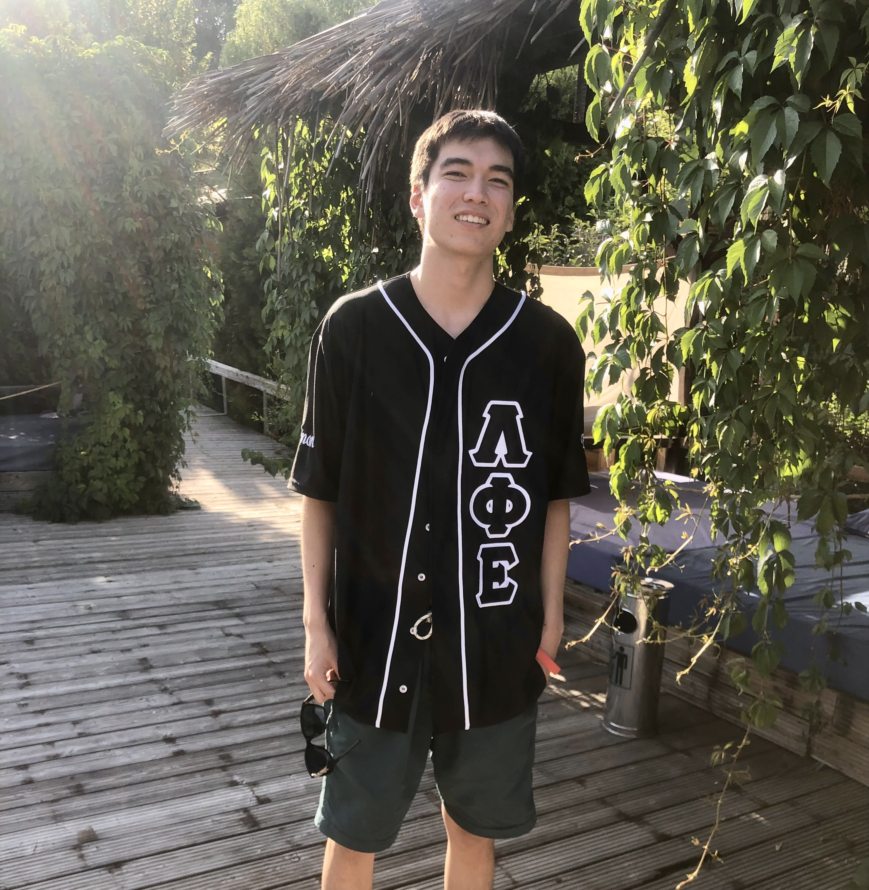
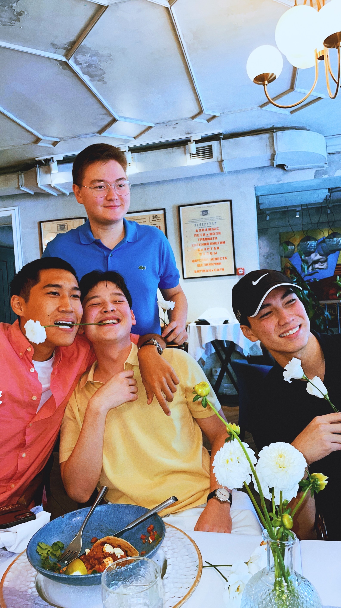
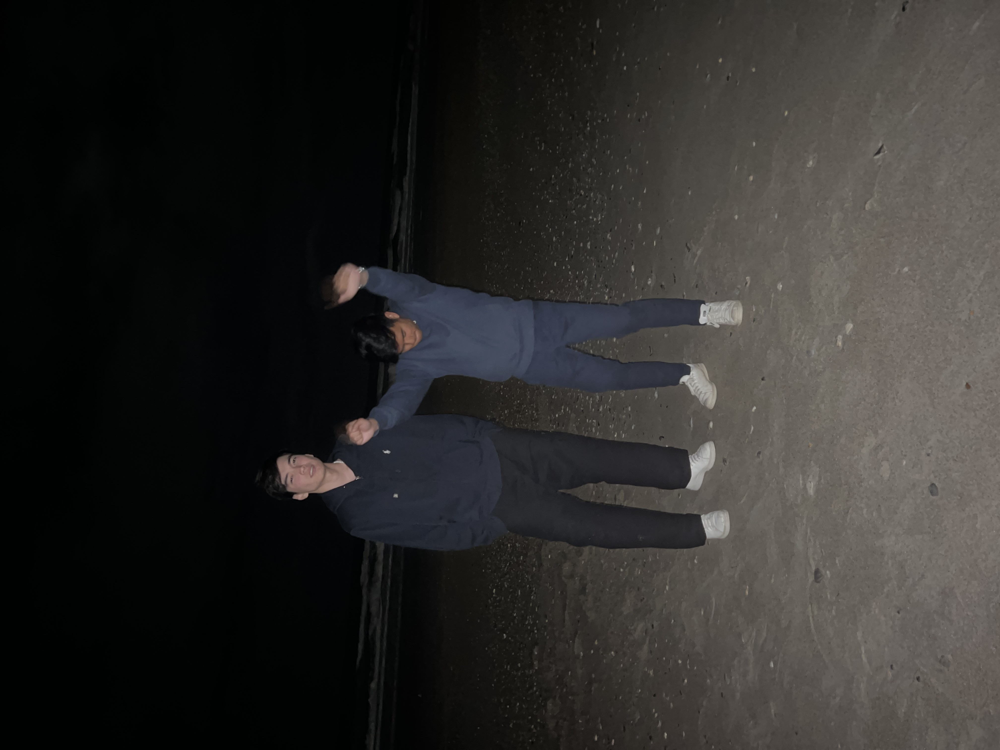

I am a sophomore at the University of North Carolina at Chapel Hill, majoring
in Computer Science.
I am also hoping to major in Information Science and currently in the process
of doing so. I am also the webmaster who built the current site of Lambda Phi Epsilon.
I am from Almaty, Kazakhstan but went to Northfield Mount Hermon Boarding School
located in Gill, Massachussetts.
Tools and concepts for information literacy. Includes software use and maintenance, computer applications, and networked information systems. (From the UNC Catalog)
Introduces discrete structures (sets, tuples, relations, functions, graphs, trees) and the formal mathematics (logic, proof, induction) used to establish their properties and those of algorithms that work with them. (From the UNC Catalog)
This course will teach you how to organize the data used in computer programs so that manipulation of that data can be done efficiently on large problems and large data instances. (From the UNC Catalog)
Examines the evolution of information science; information representation, organization and management; search and retrieval; human information seeking and interaction; organizational behavior and communication; policy, ethics and scholarly communication. (From the UNC Catalog)
We examine works written by Middle Eastern women. We will begin with reading speeches and short stories in the 1860s. (From the UNC Catalog)
Although I love attending UNC, at times classes can be hard and stressful so there are a variety ways I like to take breaks and de-stress. I enjoy playing soccer and going out with friends to eat. My favorite foods include pizza, pasta, kbbq, and hotpot! I also love to play video games which at times cause me to procrastinate my school work. Games I play include League of Legends, Valorant, and Counter-Strike Global Offensive. When I am not procrastinating by either watching TikTok videos or playing video games, I either learn a new programming language or work on a coding project.
 